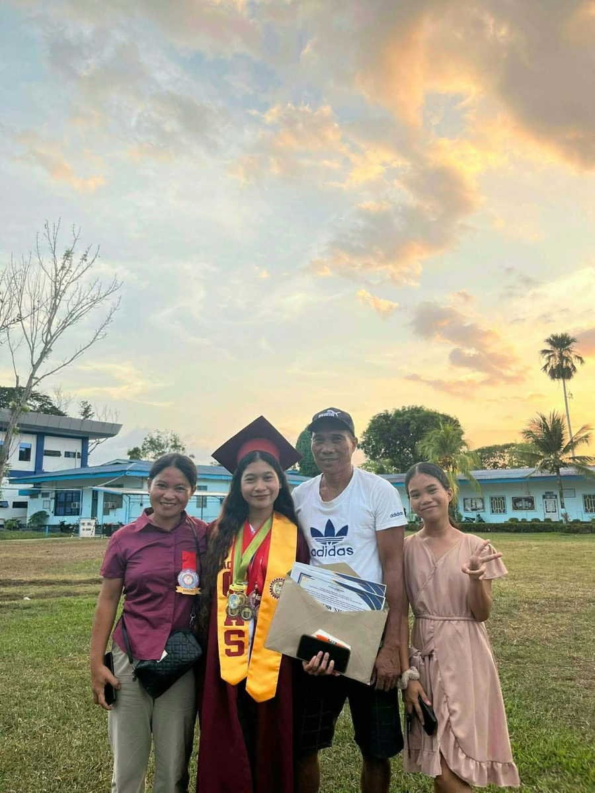
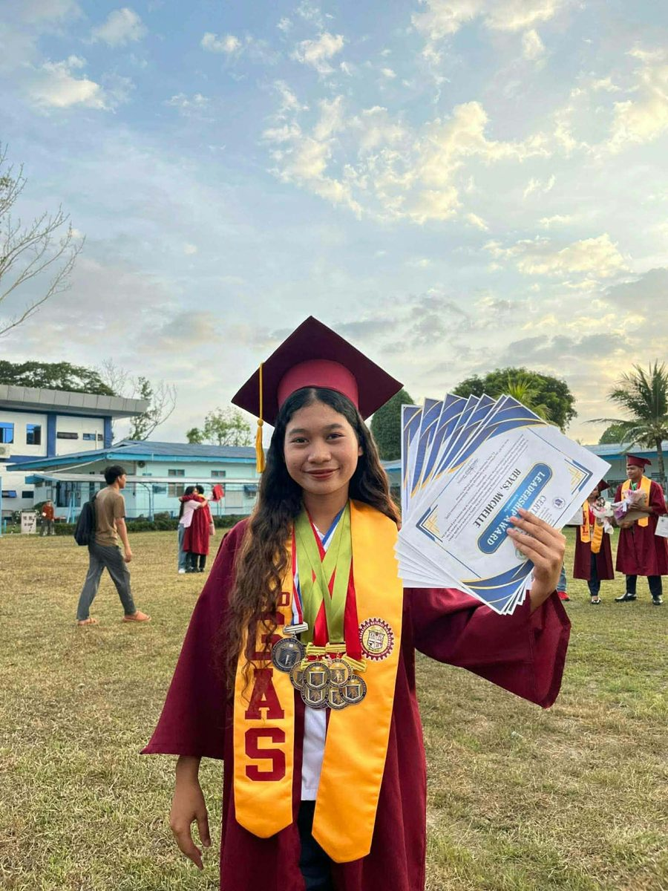
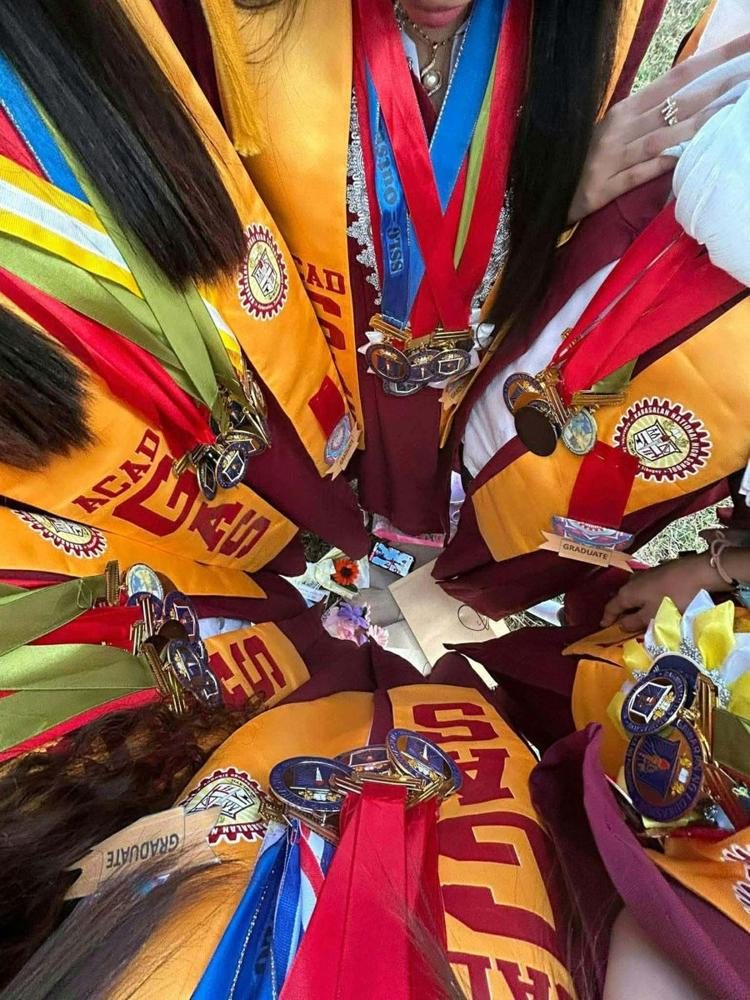
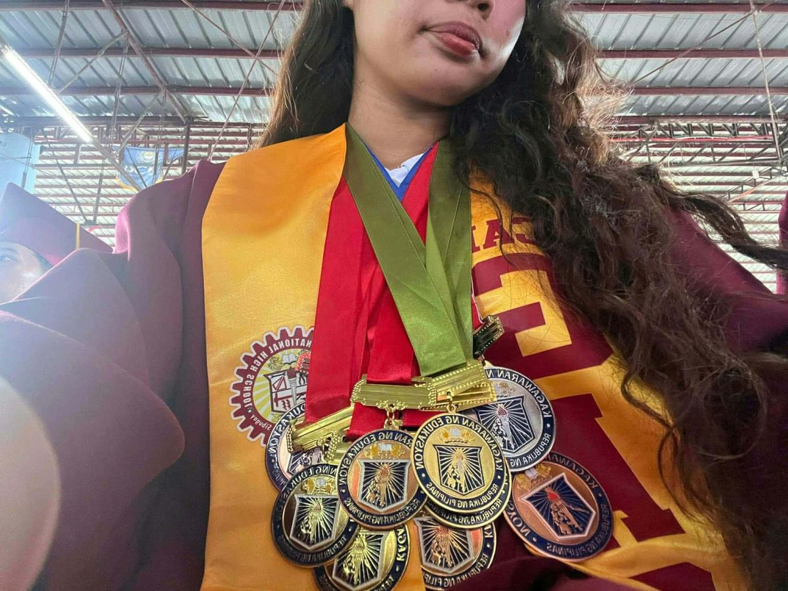

Throughout my senior high school journey at Kabasalan National High School, I worked hard to achieve academic excellence while actively participating in school activities and competitions. My dedication to learning was recognized through several awards.
Achievements
Academic Achievements
Awards earned at Kabasalan National High School
- Academic Excellence Award
- Outstanding Performance in Communication Arts Award
- Outstanding Performance in Science Award
These recognitions reflect my commitment to academic growth, critical thinking, effective communication, and continuous learning.



